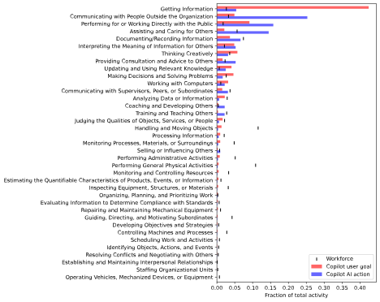

微软用Copilot的使用数据做过一个研究，其中有一个这样的图表显示了各类工作活动中的使用频率：

其中前两条反映出：
可以看到，大语言模型给我们带来的最大冲击和改变之一，是信息以一种前所未有的方式被高效组织和检索。搜索、写作（写作本身也是人类压缩和传递信息的方式）、整理资料和数据、寻求建议等等AI工具最常用的场景都是得益于此。
现在人们接收到的大部分信息靠媒体（传统媒体与自媒体）和社交平台筛选、鉴别、分发，少数靠朋友。大模型现在有能力承担筛选、鉴别、分发信息功能。
大模型成本低很多且直接针对特定用户，可直接对用户负责而不是对流量负责。但是媒体还有一些不可替代的组成例如信息渠道、真实性验证、独立调查等等较难实现。不过大部分公众对于信息的要求并不是那么高。
大模型时代还没有一个新的包含爬虫、索引、检索、返回全流程革新的搜索引擎，但是这一波浪潮发展到这个程度必然有一个像iPhone革新手机行业一样的搜索引擎。
因为正如第一点所说的，大模型有着很强大的组织、获取信息的能力，搜索引擎是过去三十年获取信息的主要入口，必定有公司将大模型的组织信息能力发挥出来取代现有的低效搜索引擎。
新的搜索引擎范式可能如下：
这正是这个项目的基本思想之一。
看到腾讯研究院的一篇文章，里面写到：腾讯研究院的一篇文章
"现在年轻人普遍处在独立自由与情感关系的两难选择。他们一方面越来越重视个人独立和自由；另一方面，又期望获得情感支持、情绪价值、缓解孤独。但是这种对独立自由的追求与对情感关系的需求之间形成了冲突，他们害怕过深的情感关系会侵占独立自由的空间。这种挣扎在亲子关系、情侣关系、婚恋关系、甚至友情等关系中都普遍存在。"
有了这些数字生命，就能解决一大传统社交网络的弊端：来自真实人类的羁绊、风险、越界，不独立且不自由。
检索信息方式经历了以下变化，目前阶段为推荐算法匹配：
类似于：番茄炒蛋 → 西红柿炒鸡蛋做法 → 初学者做番茄炒鸡蛋怎么做 → 初学者第一次做番茄炒鸡蛋，番茄鸡蛋怎么选，怎么切，需要准备什么，有哪些做法，怎么选择做法，自己口味是什么，火怎么开，火候怎么控制，什么样的做法出来的是什么效果，要不要和用户讲原理，应该怎么教用户能让它接受，用户之前有哪些相关经验……
这是互联网检索、获取信息方式的一大变革。